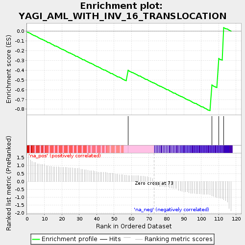
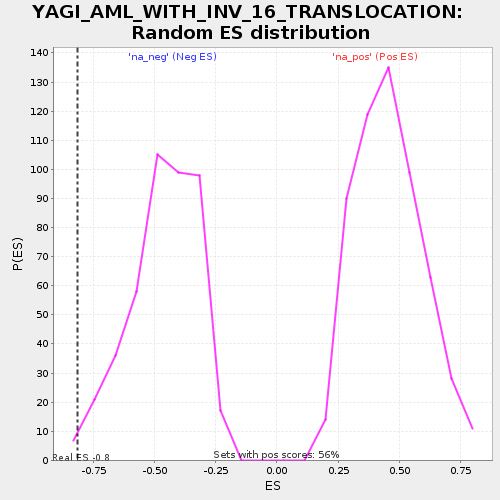

| | | Dataset | selected_gsea_35 |
| Phenotype | NoPhenotypeAvailable |
| Upregulated in class | na_neg |
| GeneSet | YAGI_AML_WITH_INV_16_TRANSLOCATION |
| Enrichment Score (ES) | -0.81462795 |
| Normalized Enrichment Score (NES) | -1.7547863 |
| Nominal p-value | 0.011337869 |
| FDR q-value | 0.4943518 |
| FWER p-Value | 0.999 |
Table: GSEA Results Summary

Fig 1: Enrichment plot: YAGI_AML_WITH_INV_16_TRANSLOCATION
Profile of the Running ES Score & Positions of GeneSet Members on the Rank Ordered List
| PROBE | GENE SYMBOL | GENE_TITLE | RANK IN GENE LIST | RANK METRIC SCORE | RUNNING ES | CORE ENRICHMENT | | 1 | OSGIN2 | | | 58 | 0.373 | -0.4023 | No |
| 2 | GPR183 | | | 106 | -0.917 | -0.5530 | Yes |
| 3 | TUBB2B | | | 110 | -1.045 | -0.2810 | Yes |
| 4 | BCL11A | | | 113 | -1.169 | 0.0351 | Yes |
Table: GSEA details [plain text format]

Fig 2: YAGI_AML_WITH_INV_16_TRANSLOCATION: Random ES distribution
Gene set null distribution of ES for YAGI_AML_WITH_INV_16_TRANSLOCATION